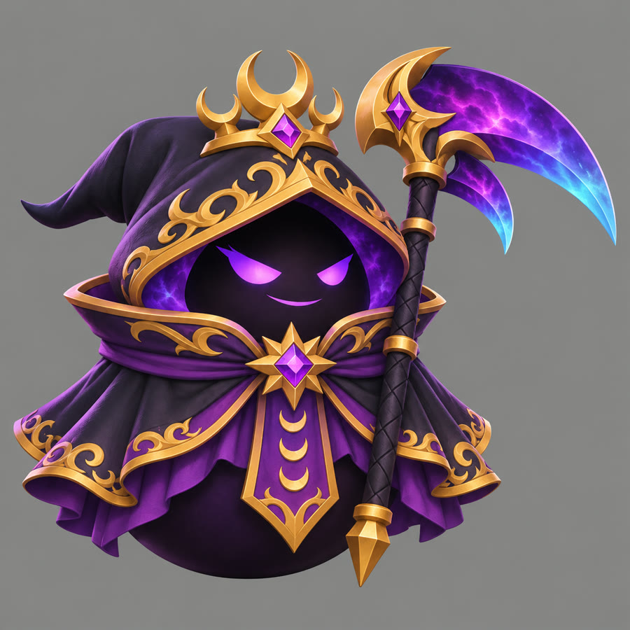
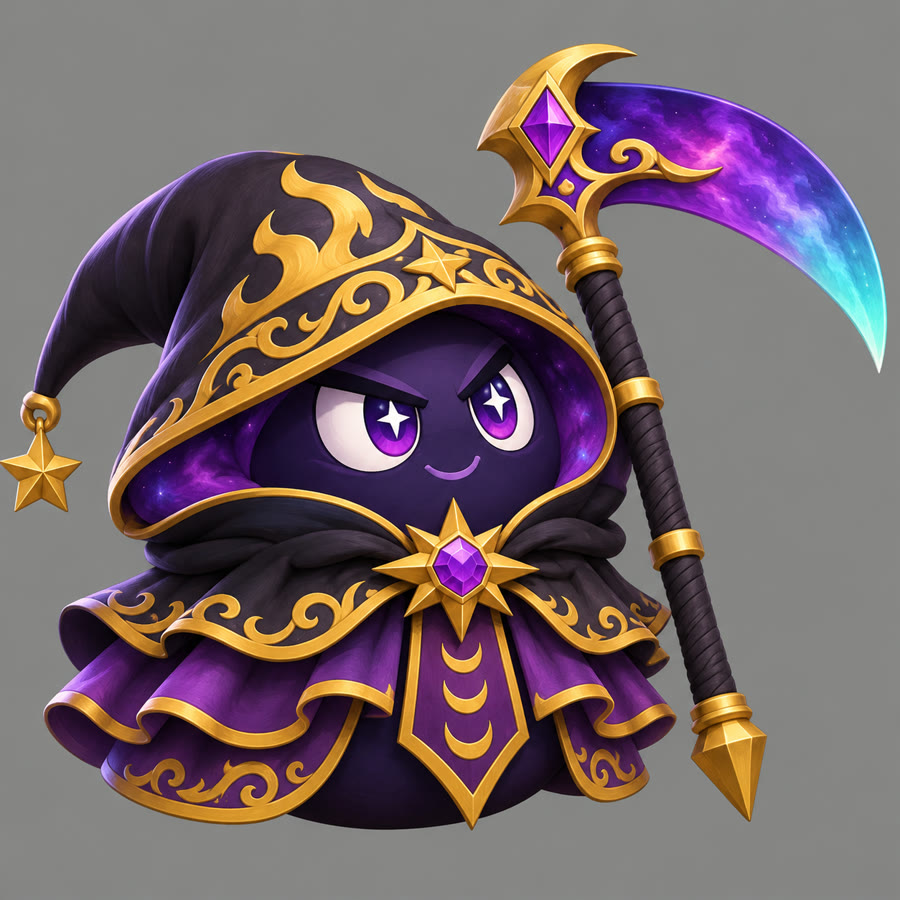

낫 든 사신 — 참고 그림 기준 3안
2026년 11월 25일. 보내 주신 참고 그림(검은 두건·금 장식·보랏빛 눈)을 기준으로 다시 그린 시안입니다 (OpenAI gpt-image-2 생성, 실제 게임 화면 아님). 하나를 고르면 Meshy로 3D 모델로 바꿔 게임에 넣습니다.
A. 참고 그림 그대로
검은 얼굴에 보랏빛 눈, 금 장식 두건, 초승달 낫

B. 사신 왕
초승달 왕관, 높은 깃과 넓게 펼친 망토, 날이 두 개인 낫

C. 표정이 보이는 안
같은 옷에 흰자 있는 큰 눈과 눈썹, 두건 끝 별 장식